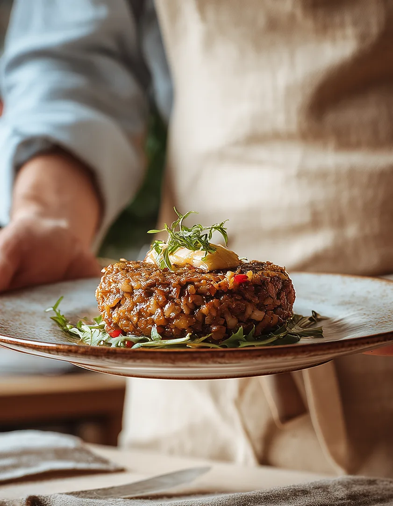
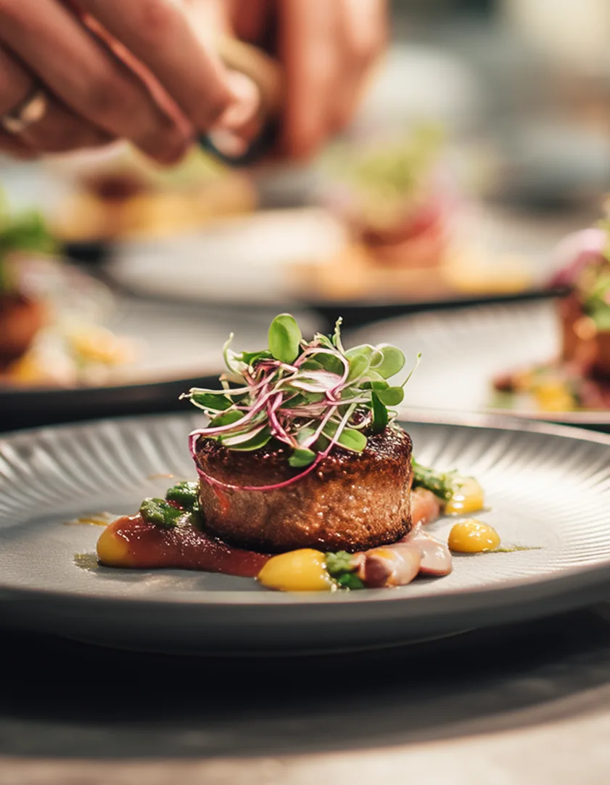
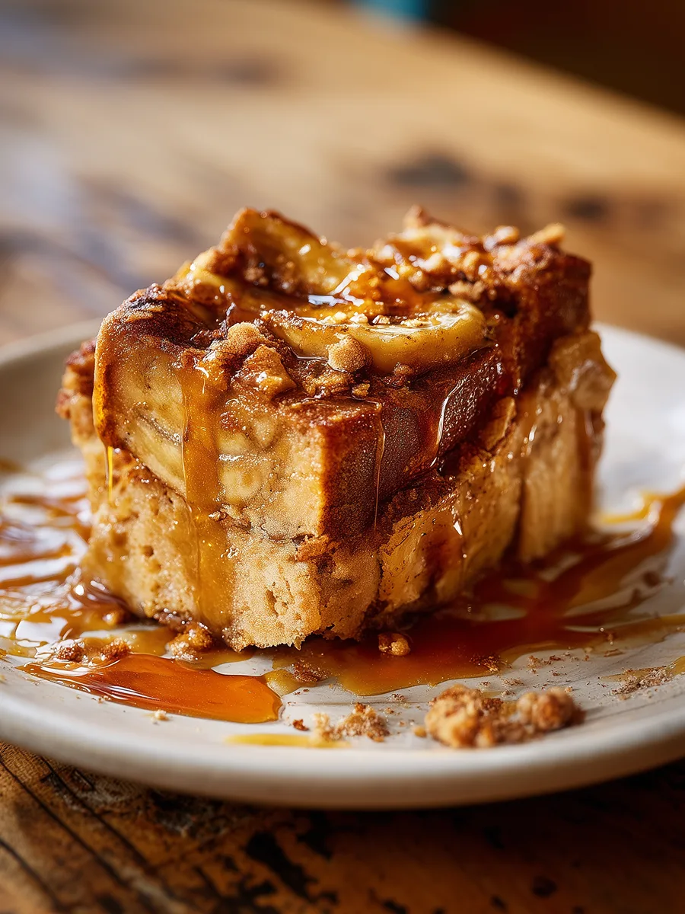
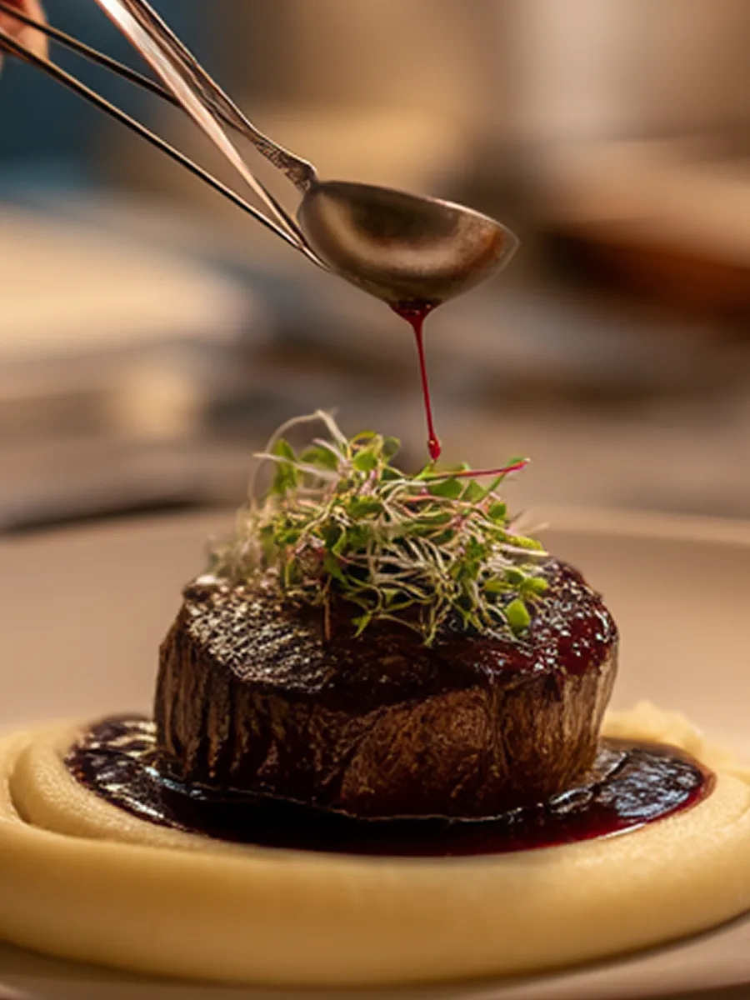
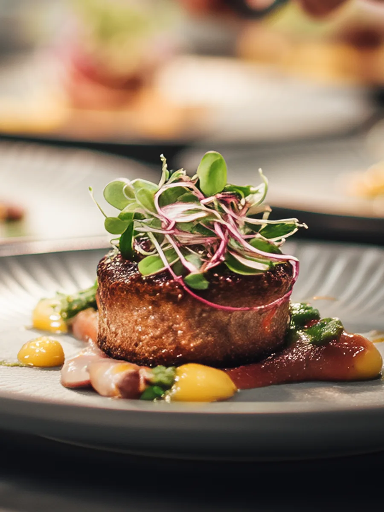
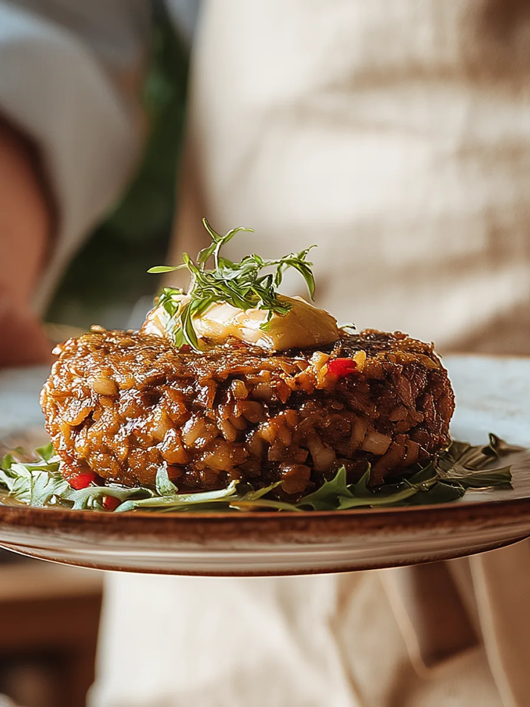

Nos réservations se font uniquement par téléphone. Nous proposons aussi des services de traiteur pour vos événements.
RÉSERVATION PAR TÉLÉPHONE
SERVICES DE TRAITEUR
CARTE QUI CHANGE RÉGULIÈREMENT





